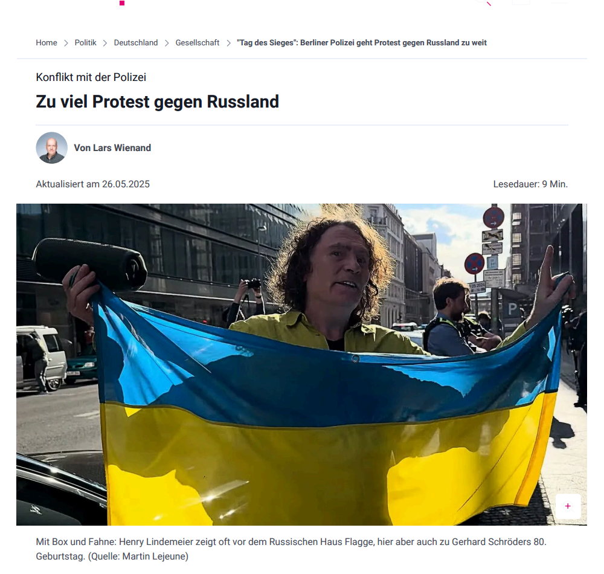

Die folgenden Auszüge geben die wesentlichen Inhalte des Artikels wieder. Der vollständige Originalartikel erschien in der jeweiligen Publikation.
Es gibt wahrscheinlich wenige Menschen auf diesem Planeten, denen ein eigenes Warnschild gewidmet ist: „Achtung! Provokationsgefahr!" steht auf Deutsch und Russisch auf zwei Aufstellern in Berlin. In der Mitte prangt ein rotes Dreieck mit einem Mann, der eine Fahne hochhält. Der Mann soll Henry Lindemeier sein, die Fahne die ukrainische.
Lindemeier protestiert regelmäßig vor dem Russischen Haus in der Friedrichstraße gegen den Ukrainekrieg. Das Haus präsentiert sich als Kultur- und Veranstaltungszentrum im Herzen Berlins und wird von einer sanktionierten russischen Regierungsagentur betrieben. Taucht Lindemeier dort auf, trägt ein Pförtner die Aufsteller vor die Tür. „Bist spät heute", sagt der Pförtner dann schon mal zu Lindemeier.
Mindestens 33 Mal kam die Polizei Berlin im Jahr 2024 ans Russische Haus, weil Lindemeier dort mit seiner Box stand. Die Polizisten sagen ihm, sie hätten einen Hals auf ihn. „Aber die müssten doch sauer aufs Russische Haus sein, das sie für nichts ruft."
„Es ist seltsam, warum die Polizei fortlaufend Quatsch nachgeht." – Anwalt Patrick Heinemann
Ein Indiz für die Schieflage: Am 18. Dezember wurde Lindemeier vor dem Russischen Haus festgenommen. Handschellen, Sammelzelle, erkennungsdienstliche Behandlung. Vier Stunden. Der Vorwurf: Beleidigungen und Ruhestörung in den Wochen zuvor. Doch das war nicht belegt. Im Rahmen einer Fortsetzungsfeststellungsklage musste die Polizei formell einräumen: Der Einsatz war rechtswidrig.
Am Tag zuvor hatte Lindemeier die Polizei gerufen – weil er bedroht worden war. „Du bekommst irgendwann ein Messer in den Rücken", hatte ein Besucher des Russischen Hauses gesagt. Lindemeier wartete dreiviertel Stunden. Die Polizei kam nicht.
„Bei einer gemeldeten Ruhestörung kommen manchmal drei Streifenwagen ans Russische Haus. Als mein Mandant bedroht wurde, war niemand verfügbar." – Anwalt Christian Wolf